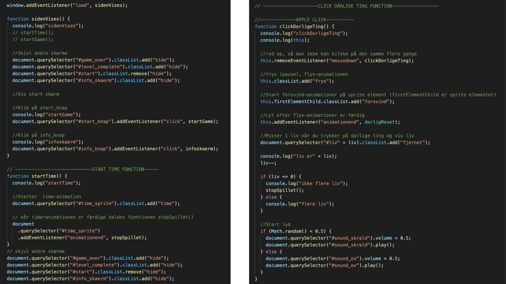

Animations forløbet hat givet mig en grundlæggende indføring til de mest anvendte redskaber i en multimediedesigners værktøjskasse. Jeg er blevet introduceret til fagligebegreber inden for design af digitalebrugergrænseflader, digital indholdsproduktion, digitalkommunikation og responsivt webdesign. Endvidere har jeg lært at sætte websider op i html og css og tilegnet mig færdigheder inden forudarbejdelse af grafik og billedbehandling i Photoshop,opsætning af tekst og billeder i Adobe XD.
Animation
01.Opgave
I forløbet Animation skulle jeg lære at fremstille interaktive brugergrænseflader der engagere og motivere brugeren. Jeg skulle udvikle mit eget spildesign efter moderne konventioner og rentegne grafikken til spillet i Adobe Illustrator. Jeg blev introduceret til javascript og sammen med css blev det muligt at lave interaktive animationer til spillet.
02.Ide og koncept

Jeg gik i gang med at ideudvikle og kom frem til at jeg gerne ville lave et affaldssorterings spil. Da jeg selv kan være utrolig i tvivl om hvorvidt pap skal i småt brændbart eller om det skal i pap. Min ide var derfor at lave et spil hvor man på en sjov måde kunne lære at affaldssortere rigtigt. Da jeg havde sat mig fast på ideen lavede jeg et aktivitetsdiagram for at få et overblik over spillets handling. Jeg undersøgte forskellige design stile og valgte en blanding af flat design og kunstneren HuskMitNavn. Til det lavede jeg moodboard og style tile så jeg fik en fornemmelse for det visuelle udtryk. Begge stile er meget enkle, todimensionelle og harmoniske. HuskMitNavn bruger runde former (bouba effekt) og har ofte en politisk og satirisk kommentar. Det er en meget velkendt streg som isæt figurerne/menneskene har. Flat Design er et minimalistisk todimensionel designstil som oftest gør brug af klare, matte farver. Det simple udtryk gør det nemt for brugeren at overskue og bidrager til en afslappet brugeroplevelse. Oprindeligt kommer flat design fra webdesigns og grafiske brugergrænseflader. De to stile passer godt til mit koncept eftersom at mit mål med spillet er at lære så mange som muligt om affaldssortering, hvilket jeg godt kunne tænke mig var en overskuelig oplevelse. Derudover ønsker jeg at bruge de runde former (bouba) og farverne fra begge stile. Jeg ønsker at tage udgangspunkt i HuskMitNavns figur design og gøre brug af det asymmetriske runde udtryk og karakteristiske streg.
03.Udvikling

Efter at designstilen var på plads gik jeg i gang med skitsering af spillet, baggrund, figurer, skærme og ui elementer. Da jeg følte at det var blevet som jeg godt kunne tænke mig gik jeg i gang med at rentegne det i Adobe illustrator. Her brugte jeg kompositoriske principper og principper om karakterdesign til at lave mit endelige spil design. Så eksporterede jeg assetsne i svg format.
04.Kodning
Herefter påbegyndte jeg udviklingen af css animation og javascript. Jeg blev introduceret til Javascript og hvordan det hænger sammen med resten af koden. Lærte at sætte det ind i funktioner tilføje og fjerne en class, slutte animationer, få til at ske noget når man klikkede på dem og kunne kode hvilke scenarier der ville ske alt efter de betingelser jeg satte ind i koden (hvornår tingene faldt ned, hvis jeg mistede alle liv, hvis jeg fik nok point osv.) Jeg lærte også at indsætte lyd, få en timer til at tælle tid ned og tælle click samt point.
05.Survey og test
Ud fra online fernisering fik jeg den feedback at forsøgspersonerne først forstod spillet efter at have trykket på info knappen, at de fik lyst til at spille igen, ville gerne have en spilleskærm hvor der skete lidt mere, havde svært ved at se hvor mange liv de havde, det grafiske var gennemført. Hvis jeg havde haft mere tid havde jeg arbejdet videre med spil designet og det grafiske. Spil Skærmen skulle helt klart blive mere spændende at se på og måske færre elementer at trykke på. Jeg skulle have afprøvet lidt forskellige startskærme så man som bruger var sikker på hvad spillet går ud på. Om folk havde lært noget om affaldssortering var meget blandet og jeg har derfor svært ved at sige om der skal ændres noget.
06.Links
07.Challenges
At bruge Javascript og forstå cost og let. Jeg var syg i starten af forløbet og havde derfor ikke været der de første dage, som gjorde at jeg havde tænkt lidt for store tanker om spillets kunnen og derfor lavet et lidt for ambitiøs spil ide til at starte med. Havde jeg været mere klar over mulighederne fra start havde jeg nok fundet på noget mere simpelt men sjovt. Jeg følte hele tiden at jeg var bagud og havde svært ved at samle brikkerne til sidst men fik da et nogenlunde fint spil ud af det!
08.Hvad har jeg lært?
- Figur design
- Adobe illustartor
- Aktivitetsdiagram
- Statemachine diagram
- Java script
- Motivere brugeren
- Fremstille interaktiv brugergrænseflade